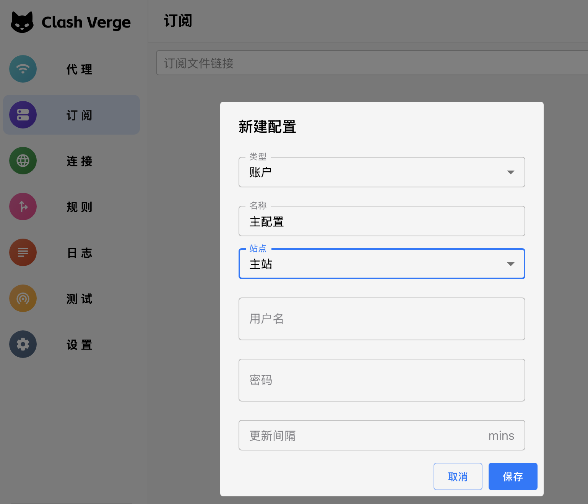
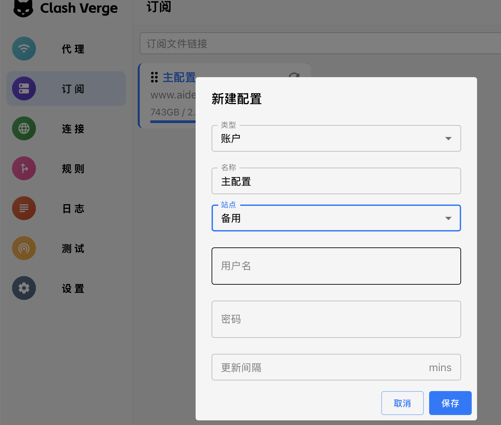
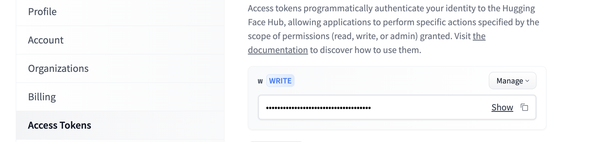
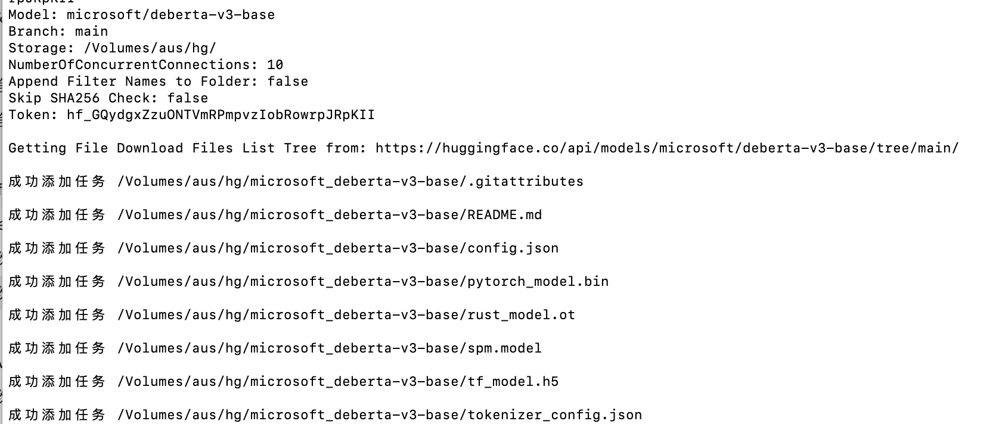
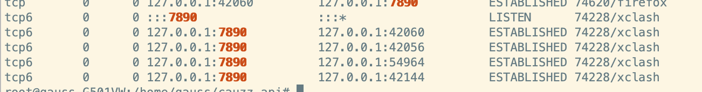
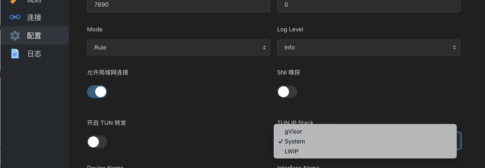
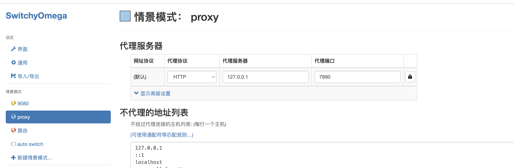

!!!必看!!! 小猫的问题不要在 TB 上讨论,聊天审核可能会封禁
!!!注意!!! 实在搞不定可以要求远程,或者加VX沟通
要接管全部流量,代码中运行,参考 2.5 开启 tun mode 模式
1.1 下载地址(Linux 终端版直接看步骤 7)
1.2.1 MacOS 报错处理(MacOS 没有报错可以无视)
js
xattr -d com.apple.quarantine /Applications/Clash\ Verge.app
1.2.2 Linux 下 安装运行以及问题解决(Window 和 MacOS 用户忽略这部分)
1.2.2.1 Linux deb 包安装，根据 deb 包文件名不同做适当调整
conf
sudo apt update
sudo apt install -fy ./Clash.Verge_2.3.0-alpha_amd64.deb
使用
文本编辑器 vim 或者 gedit 都可以，这里使用 gedi
conf
sudo apt install gedit
sudo gedit /etc/apt/sources.list.d/ubuntu.sources
conf
Types: deb
URIs: http://br.archive.ubuntu.com/ubuntu/
Suites: jammy noble-updates noble-backports
Components: main restricted universe multiverse
Signed-By: /usr/share/keyrings/ubuntu-archive-keyring.gpg
Types: deb
URIs: http://security.ubuntu.com/ubuntu/
Suites: jammy-security
Components: main restricted universe multiverse
Signed-By: /usr/share/keyrings/ubuntu-archive-keyring.gpg
conf
sudo apt update
sudo apt install libwebkit2gtk-4.0-dev
1.2.2.2 Linux 便携版本 AppImage，根据 AppImage 文件名不同做适当调整
conf
chmod +x mat_1.6.5_amd64.AppImage
./mat_1.6.5_amd64.AppImage
swift
sudo add-apt-repository universe
sudo apt install libfuse2
swift
sudo apt install fuse libfuse2
sudo modprobe fuse
sudo groupadd fuse
user="$(whoami)"
sudo usermod -a -G fuse $user
Ubuntu18 等老版本报错提示找不到 GLIBC_2.28, 要执行一下命令更新到 GLIBC_2.28
conf
sudo su -c 'echo "deb http://security.debian.org/debian-security buster/updates main" >> /etc/apt/sources.list' root
sudo apt-key adv --keyserver keyserver.ubuntu.com --recv-keys 112695A0E562B32A 54404762BBB6E853
sudo apt update
sudo apt install libc6 libc6-dev -y
conf
解决的办法有四种，第四种解决方法，一劳永逸。
1、启用用户名称空间： sudo sysctl kernel.unprivileged_userns_clone=1，但每次开机都要运行该命令。
2、给报错信息给出的文件授权：sudo chown root /chrome-sandbox && sudo chmod 4755 /chrome-sandbox，即解决网易云音乐该问题时的操作，但不适用于picgo。
3、运行的时候加上免沙箱命令：--no-sandbox
4、开机时自启动用户名称空间：echo 'kernel.unprivileged_userns_clone=1' > /etc/sysctl.d/userns.conf
该命令只适用于Debian/Ubuntu系列Linux发行版，未测试其他发行版。
Tips:如果主站无法访问,可以尝试使用备用站登录


一般情况选规则-> 节点选择-> 低延时(推荐) 或 故障切换(推荐) 便可
如果有些网站没有被规则涵盖，可以切换到全局(全局模式所有经过小猫的流量都会走节点，包括国内站点)
有些软件或脚本无法使用系统代理,请开启 2.5 中的 Tun 模式
注意关闭软件，可能系统代理配置不会恢复 如果遇到不打开软件就无法上网的问题，可以手动关闭系统代理
2.5 开启 tun mode 接管网卡(非必须,看需要-> 建议一般情况下不要开启)
2.5.1 授权内核(只对MacOS和Linux有效)
2.5.2 安装服务模式(新版本默认安装，老版本需要手动)
2.5.3 开启 tun 模式和服务模式(建议一般情况下不要开启，除非有些软件不能使用系统代理)
点击箭头后打开配置的文件夹，退出小猫后，将文件夹内的文件全部删除，重启 APP，重新配置
往下内容是 huggingface 下载部分,只用小猫可以不看===> 往下内容是 huggingface 下载部分,只用小猫可以不看
往下内容是 huggingface 下载部分,只用小猫可以不看===> 往下内容是 huggingface 下载部分,只用小猫可以不看
往下内容是 huggingface 下载部分,只用小猫可以不看===> 往下内容是 huggingface 下载部分,只用小猫可以不看
3 下载工具 Motrix(适用于数量少大文件 LFS 文件)
3.2 设置代理(开启了 tun mode 可以忽略)
启用代理,并地址填写: http://127.0.0.1:7890
注意:有些模型可能需要 token 下载,不能直接添加链接到下载工具,勾选高级，在请求头添加 token(
点击获取 token)
批量下载工具依赖步骤 3 中的工具 Motrix,需要该工具在开启状态,并可以正常下载
4.1.0 基本设置(代理，Aira2 设置，储存目录，hf token)
4.2 HuggingFaceModelDownloader(命令行工具)
4.1.1 获取 hg 的 token(非必须,有些项目需要)

4.1.2 打开 powershell 等,执行执行命令
参数-s:指定保存路径,建议用全路径,否则会保存在 Motrix 默认目录下
bash
# 非系统盘,如D盘,需要先切换到D盘,执行 D:\
cd C:\Users\abc
# 下载模型 参数-m 参数-s指定保存路径,建议用绝对路径,否则会下载到
hfdownloader_windows_amd64_1.2.9.exe -m TheBloke/WizardLM-13B-V1.0-Uncensored-GPTQ -c 10 -s MyModels
# 下载数据集 参数-d
hfdownloader_windows_amd64_1.2.9.exe hfdownloader -d facebook/flores -c 10 -s MyDatasets
#有些项目需要带token下载,token_xxxx替换为4.1.3中获取的token
hfdownloader_windows_amd64_1.2.9.exe hfdownloader -d facebook/flores -c 10 -s MyDatasets -t token_xxxx

而且
Motrix 下载工具中,有相应的任务添加
打开命令行工具(cmd 或 powershell)
bash
git config --global https.proxy http://127.0.0.1:7890
git config --global http.proxy http://127.0.0.1:7890
git config --global http.sslverify false
bash
git clone https://huggingface.co/datasets/declare-lab/TangoPromptBank
js
from transformers import AutoTokenizer
checkpoint = "distilbert-base-uncased-finetuned-sst-2-english"
tokenizer = AutoTokenizer.from_pretrained(checkpoint)
7.1.2.1 x86 架构(英特尔处理，AMD 处理器)
js
wget https://cors.isteed.cc/github.com/cauyy/matui/releases/download/alpha/tpclash-mat-linux-amd64
chmod +x tpclash-mat-linux-amd64
# 例子中的token替换成自己的token,要查看token到https://www.aider.host/panel/profile
# 如果不想tpclash接管网卡，可以去掉参数-f，去掉参数-f后，需要自行设置代理，类似7.1.3测试那样
# 例子
sudo ./tpclash-mat-linux-amd64 install -f -t 46eb213ffeeb426cafd1043c71426542
sudo systemctl daemon-reload
sudo systemctl start tpclash
#查看是否启动成功
sudo journalctl -fu tpclash
#或者
sudo netstat -apn | grep 7890
👌 TPClash 安装完成, 您可以使用以下命令启动:
● 启动服务: systemctl start tpclash
● 停止服务: systemctl stop tpclash
● 重启服务: systemctl restart tpclash
● 开启自启动: systemctl enable tpclash
● 关闭自启动: systemctl disable tpclash
● 查看日志: journalctl -fu tpclash
● 重载服务配置: systemctl daemon-reload
7.1.2.2 ARM 架构(树莓派，英伟达 json，海思服务器等)
js
wget https://cors.isteed.cc/github.com/cauyy/matui/releases/download/alpha/tpclash-mat-linux-arm64
chmod +x tpclash-mat-linux-arm64
# 例子中的token替换成自己的token,要查看token到https://www.aider.host/panel/profile
# 如果不想tpclash接管网卡，可以去掉参数-f，去掉参数-f后，需要自行设置代理，类似7.1.3测试那样
# 例子
sudo ./tpclash-mat-linux-arm64 install -f -t 46eb213ffeeb426cafd1043c71426542
sudo systemctl daemon-reload
sudo systemctl start tpclash
#查看是否启动成功
sudo journalctl -fu tpclash
#或者
sudo netstat -apn | grep 7890

👌 TPClash 安装完成, 您可以使用以下命令启动:
● 启动服务: systemctl start tpclash
● 停止服务: systemctl stop tpclash
● 重启服务: systemctl restart tpclash
● 开启自启动: systemctl enable tpclash
● 关闭自启动: systemctl disable tpclash
● 查看日志: journalctl -fu tpclash
● 重载服务配置: systemctl daemon-reload对于 centos 等老系统，无法实现 tun 全局接管的，可以试试 proxychains
conf
yum install epel-release
yum install -y proxychains-ng
vi /etc/proxychains.conf
# 将socks4 127.0.0.1 9095改为
http 127.0.0.1 7890
#测试
proxychains wget https://www.google.com
conf
wget https://cors.isteed.cc/github.com/cauyy/matui/releases/download/alpha/tpclash-mat-linux-amd64
chmod +x tpclash-mat-linux-amd64
# 例子中的token替换成自己的token,要查看token到https://www.aider.host/panel/profile
#
# 如果提示/data目录没有权限，通过-d xxxx修改程序目录，比如/home/xxxx(不要傻傻的直接用，只是举例)
# 大概率会报错不用管
./tpclash-mat-linux-amd64 -t 46eb213ffeeb426cafd1043c71426542 -d /home/xxxx
#.eg 启动代理（通过-d xxxx修改程序目录的要用具体目录替换/data）
/data/clash/xclash -f /data/clash/xclash.yaml -d /data/clash
#然后其他窗口设置代理
export HTTP_PROXY=http://127.0.0.1:7890
export HTTPS_PROXY=http://127.0.0.1:7890
#或者
netstat -apn | grep 7890
如果./tpclash-mat-linux-arm64 -t 46eb213ffeeb426cafd1043c71426542 -d /home/xxxx 报错，类似，不用管
如果文件 tpclash-mat-linux-arm64 下载有问题可以本地下载完再上传
conf
#如果内核支持tun模式，可以直接接管网卡，无需设置代理参数
wget -c -r -np -k -L -p https://www.youtube.com
#如果内核不支持tun模式，需设置代理参数
wget -c -r -np -k -L -p -e "https_proxy=http://127.0.0.1:7890" https://www.youtube.com
-c -r -np -k -L -p -e "https_proxy=http://192.168.199.174:7890"
如果操作，进入 http://ip:9090/ui -> ip 改为具体的地址
7.1.4.1 如本机访问，浏览器访问 http://127.0.0.1:9090/ui
API Base 填 http://127.0.0.1:9090，点击 Add
7.1.4.2 如果其他机器，比如 IP 为 192.168.1.111，则浏览器访问 http://192.168.1.111:9090/ui
API Base 填 http://192.168.1.111:9090，点击 Add
7.1.4.2.1 如果不能访问，请检查端口(9090)访问是否开放,放开端口参考
对于 ufw 防火墙（Ubuntu/Debian）:
对于 firewalld（CentOS/RHEL/Fedora）:
conf
sudo firewall-cmd --zone=public --add-port=9090/tcp --permanent
sudo firewall-cmd --reload
conf
sudo iptables -A INPUT -p tcp --dport 9090 -j ACCEPT
7.1.4.2.2 不想放开端口，参考 SSH 转发
conf
ssh -L 9090:远程主机地址:远程端口 用户名@远程主机
例如：ssh -L 9090:192.168.1.100:9090 user@remote_host
7.1.4.3 选择 「自动选择」或 「自动选择(低延时)」
7.1.4.4 对于 centos 等，可能不成功，配置里面 TUN IP Stack 切换下(
gVisor,System,LWIP 都试试)

8.1 neatdownloadmanager 下载工具
对于 MacOS 系统可能会被 Motrix 不稳定困扰,如果不需要批量下载可以用这个工具
8.1.2 设置缓存路径和文件保存路径,以及默认并发线程
可以让 neatdownloadmanager 接管浏览器下载
8.2 浏览器插件 SwitchyOmega 3(ZeroOmega)安装(可选)
系统有时可能各种原因设置系统代理不生效，可以直接浏览器安装代理切换插件

设置好代理地址和端口后保存，然后就可以切换浏览器代理为 proxy
如果遇到类似这种情况(配置不兼容,混乱)，执行删除所有配置文件
点击「应用目录」，打开配置文件目录，退出 app 后，删除里面的所有东西
WSL 有两个版本，WSL1 和 WSL2,在终端执行，可以得到 WSL 版本信息
WSL1 和宿主机试共享网络的，直接开启 tun 模式就行
8.5 MacOS 系统下自动定时覆盖系统的 DNS 为 223.5.5.5
conf
echo Empty > /Applications/Clash\ Verge.app/Contents/Resources/resources/original_dns.txt
nano /etc/docker/daemon.json
、
{
"registry-mirrors": ["https://registry.docker-cn.com"],
"proxies": {
"http-proxy": "http://127.0.0.1:7890",
"https-proxy": "http://127.0.0.1:7890",
"no-proxy": "localhost,127.0.0.1"
}
}